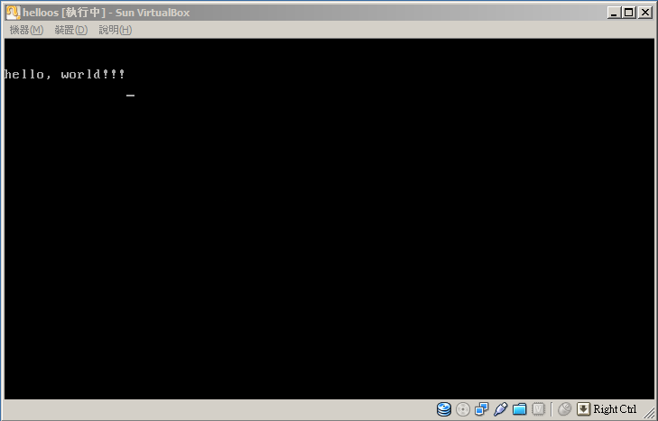

本著作係採用創用 CC 「姓名標示 2.5 台灣版」授權條款釋出。
Home
本著作係採用創用 CC 「姓名標示 2.5 台灣版」授權條款釋出。
Home
心理治療師寫的書說要日常生活要盡量用正面的話不要用負面的話，所以就不寫屁話。最近在看寫給國中生看的自製OS的書，覺得相當的不錯。在日本有人願意這樣整理之後，拉低初心者所須知識這樣來闡述這類知識很讚。
這本書作者一開始是用手一個byte一個byte把1.44M軟碟機的image打出來，那時候我是用UltraEditor幫我補齊1.44M的0x00再去改(呵 既然買了UltraEditor就要好好利用)。就跳過那步直接從Hello World IPL開始，首先先把書上的Hello World, IPL範例搞出來，範例如下
assembly language的syntax highlight是為了這個自己新增的，只有先打部分instruction，以後再慢慢補齊。有興趣的自己view source應該會知道js放的位置。
org 0x7c00
JMP start
DB 0x90
DB "HELLOIPL"
DW 512
DB 1
DW 1
DB 2
DW 224
DW 2880
DB 0xf0
DW 9
DW 18
DW 2
DD 0
DD 2880
DB 0,0,0x29
DD 0xffffffff
DB "HELLO-OS "
DB "FAT12 "
times 18 db 0
start:
MOV AX,0
MOV SS,AX
MOV SP,0x7c00
MOV DS,AX
MOV ES,AX
MOV SI,msg
putloop:
MOV AL,[SI]
ADD SI,1
CMP AL,0
JE fin
MOV AH,0x0e
MOV BX,15
INT 0x10
JMP putloop
fin:
HLT
JMP fin
msg:
DB 0x0a, 0x0a
DB "hello, world!!!"
DB 0x0a
DB 0
times 510 - ($-$$) db 0 ; 填滿boot區塊512 byte, $: current line, $$: frst instruction
dw 0xAA55
和書上不同的是我想改用NASM來做bin。用NASM compile出bin的指令如下
util\nasm-2.08.01\nasm -f bin Boot1.asm -o Boot1.bin
接著就是把bin放到disk image的前512 byte。說穿了取代手打就是用OutputStream搞定
class ImageFileTest {
public static void main(String[] args) {
def filename = "helloos.g.img"
def bootbin = "Boot1.bin"
byte[] fat12 = [0xF0, 0xFF, 0xFF]
def fat12_1_pos = 512
def fat12_2_pos = 5120
def disksize = 1474560
def iplsize = 512
byte[] ipl = new byte[ iplsize ]
byte[] filecontent = new byte[ disksize ]
def file = new File( filename )
def bootfile = new File( bootbin )
for( i in 0..disksize-1 ) {
filecontent[i] = 0x00
}
// ipl program to image
bootfile.withInputStream { is ->
is.read( ipl, 0, iplsize )
for( i in 0..iplsize-1 ) {
filecontent[i] = ipl[i]
}
}
// write fat to image
for( idx in 0..2 ) {
filecontent[ fat12_1_pos+idx ] = fat12[ idx ]
filecontent[ fat12_2_pos+idx ] = fat12[ idx ]
}
file.withOutputStream { os ->
os.write( filecontent, 0, disksize )
}
}
}
利用VirtualBox或其他類似工具建立虛擬機器，在軟碟機那邊掛載剛剛產生的image file。然後啟動虛擬機器看看。我自己的機器跑起來結果如下圖
看到Hello, World感覺很讚吧 哈哈